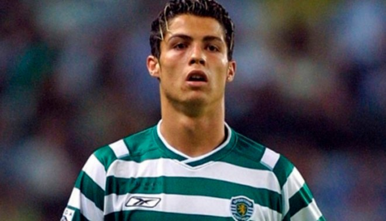
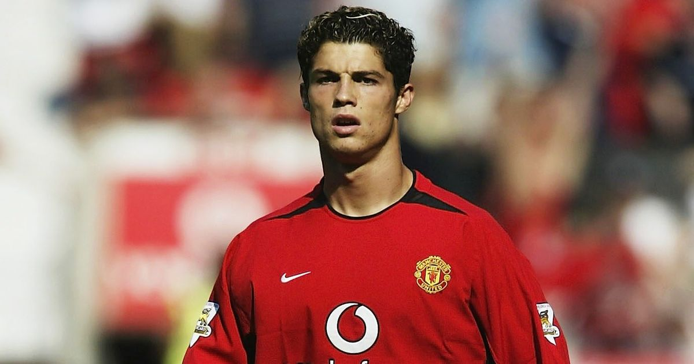
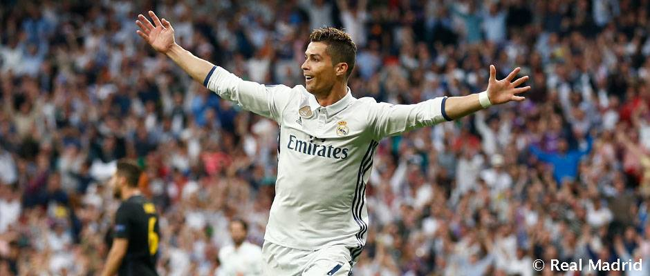
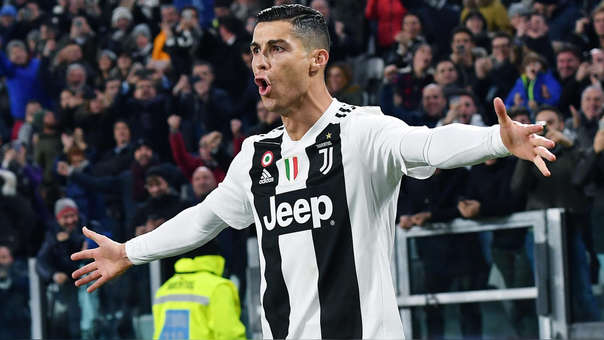

CRISTIANO RONALDO
- Inicio
- Biografia
- Titulos
- Mejores Goles

Un futbolista nacido de la pobreza, en una isla perdida para medio mundo, Madeira. Desde allí quiso triunfar en la vida. En el Sacar a su madre de la pobreza. Tuvo que trasladarse a Lisboa para darse a conocer. Si no hubiera salido de Funchal, no habría llegado a nada, porque nadie le habría visto jugar a los catorce años con esa garra, esa valentía, esa ambición.
Detrás del foco de la estrella se esconde un trabajo imparable de quince años, desde los catorce, para llegar a ser el mejor futbolista del mundo. Tras las bambalinas de las dos Champions, de los tres Balones de Oro, de las Botas del mismo metal y de los Pichichis hay un hombre que se dedicó desde niño, en su barrio de Funchal, a intentar ser el mejor futbolista de Portugal.
| Equipo | Resumen | Numero de Goles |
|---|---|---|
| Sporting C. P. |
Comenzó a destacar entre sus compañeros del Andorinha, su primer club y donde trabajaba su padre. Al cumplir los diez años, los grandes equipos de Madeira, C. S. Marítimo y C. D. Nacional ya se habían interasado en su contratación. Finalmente se incorporó a las filas del Clube Desportivo Nacional, donde continuó con su progresión, convirtiéndose en una de las más brillantes promesas del fútbol portugués.
En el verano de 2003, Sporting de Lisboa y Manchester United Football Club disputaron un encuentro amistoso con motivo de la inauguración del Estadio José Alvalade para la Eurocopa 2004. En ese partido, el joven extremo cuajó una magnífica actuación que asombraría tanto a los propios jugadores rivales como a su entrenador Alex Ferguson, que consiguió el traspaso del portugués al club inglés poco después en ese mismo verano. |
5 |
|  | ||
| Manchester United F. C. |
Cristiano Ronaldo durante su etapa en el Manchester United, donde se consagró como uno de los mejores futbolistas del momento. Para la temporada 2003-04, el entrenador Sir Alex Ferguson le asignó el dorsal «7» que había dejado el excapitán del Manchester, el mediocampista inglés David Beckham Tras un mal inicio en la Liga 2005-06, en la que, sin embargo, anotó en los primeros partidos el gol número 1.000 del club en la Premier League, fue nombrado por la FIFPro «Mejor jugador joven del año», firmando algunas de sus mejores actuaciones como jugador «red» en partidos frente al Bolton Wanderers F. C.,47 el Fulham F. C., el Portsmouth F. C.,48 o el Wigan Athletic F. C. en la final de la Carling Cup, donde se proclamaron campeones después de vencer por 4-0.49 Finalmente se proclamó también campeón de liga por segundo año consecutivo, y sus números mejoraron a 12 goles en 47 partidos. Durante el verano de 2008, se especuló sobre la posible salida del jugador al Real Madrid C. F., club que siempre mostró mayor interés por el futbolista.71 Sin embargo, las negociaciones se pospusieron para la temporada siguiente, mientras se recuperaba de una lesión que posiblemente le tendría fuera de los terrenos de juego hasta el mes de octubre. Su recuperación llegó antes y dejó uno de los goles más bellos en su carrera en el partido de Liga de Campeones frente a su antiguo rival, el Futebol Clube do Porto, al anotar desde más de treinta y cinco metros.72 El gol fue posteriormente galardonado con el Premio Puskás al mejor gol del año.73 Su alto rendimiento llevó al club a disputar su segunda final de la Liga de Campeones de manera consecutiva. En ella fueron derrotados por el F. C. Barcelona por 2-0,74 aunque sí fue capaz de retener el título de la Premier League.75 Finalizó la temporada con un registro de cincuenta y cuatro partidos y veinticuatro goles con el United,76 y con un registro total de ciento dieciocho goles en doscientos noventa y dos partidos. |
118 |
|  | ||
| Real Madrid C. F. |
El 11 de junio de 2009, el club inglés aceptó la oferta de £80 millones del Real Madrid Club de Fútbol, confirmándose dos semanas después que había sido el traspaso más caro en la historia del fútbol hasta la fecha —posteriormente superado por el de Paul Pogba de la Juventus al Manchester United por 120 millones de euros. Fue presentado con el dorsal «9» en el Estadio Santiago Bernabéu ante unas 80 000 personas, cifra nunca vista en una presentación Con la salida del capitán Raúl González, Ronaldo heredó su clásico dorsal «7»,90 con el que tendría un espectacular comienzo de temporada en el que se destapó como uno de los mejores goleadores nunca vistos. Entre sus actuaciones, destacaron la realizada contra el Racing de Santander, donde anotó por primera vez en su carrera cuatro goles en un partido,91 o las acontecidas en el mes de octubre, donde anotó en 6 partidos consecutivos un total de 13 tantos, la mayor cantidad en un mes natural para él,92 llegando a los 50 goles en 53 partidos, convirtiéndose en el jugador del Real Madrid C. F. que menos partidos necesitó para llegar a dicha cifra. En la nueva temporada, el jugador se convirtió en noviembre en el primer jugador del Real Madrid en anotar 100 goles en competiciones europeas para un mismo club,184 habiéndolo logrado en septiembre en el cómputo de todas las competiciones internacionales en el mismo partido en el que jugaba su partido 400 con el club. El 26 de mayo de 2018 logra la decimotercera Copa de Europa —la quinta suya— tras vencer al Liverpool F. C. en la final de Kiev; con su quinto título ha ganado las mismas Copas de Europa que Alessandro Costacurta, Paolo Maldini, el F.C. Barcelona, el F.C. Bayern y el propio Liverpool F.C., y quedando a un título de Paco Gento —quien también jugó en el conjunto madridista— y a dos títulos del A.C. Milan. |
19 |
|  | ||
| Juventus F. C. |
El martes 10 de julio de 2018 se hizo oficial su traspaso por 105 millones de euros a la Juventus de Turín.186 Ronaldo debutó de forma oficial en el primer partido de la primera jornada de la Serie A, en un encuentro como visitante ante el Chievo Verona que la Juventus acabaría ganando 3-2. Aunque no marcó, Cristiano cuajó un buen partido creando varias ocasiones de gol y asociándose con sus nuevos compañeros. |
19 |
|  | ||